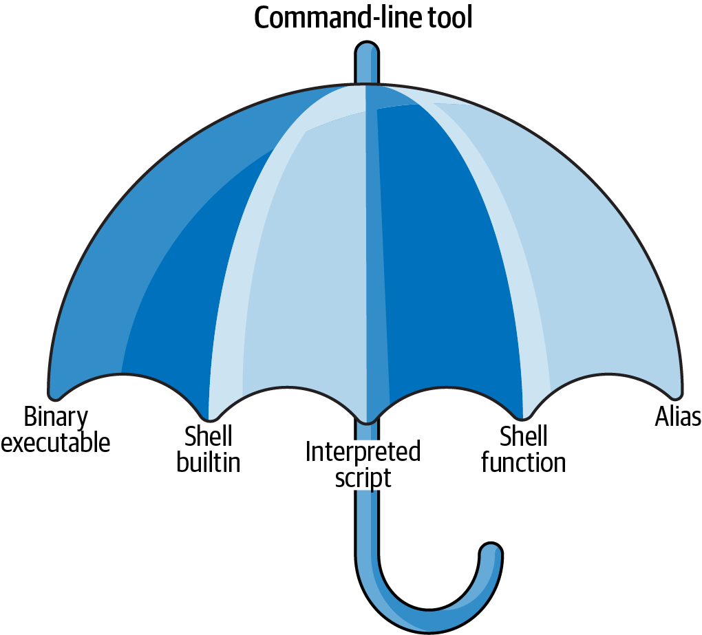
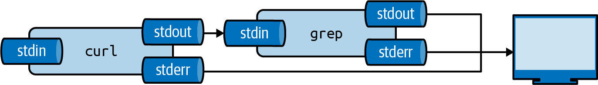
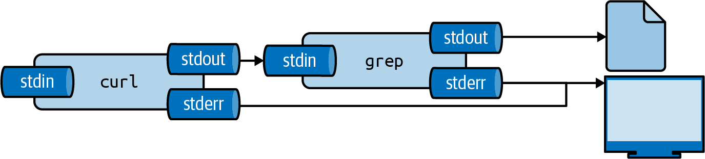
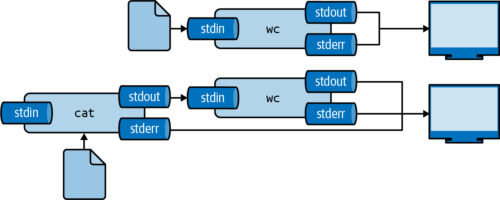
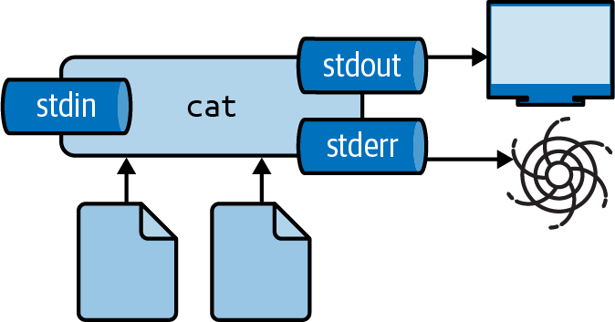
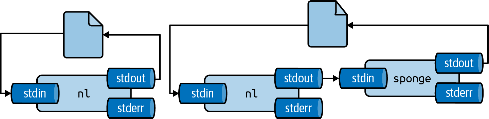
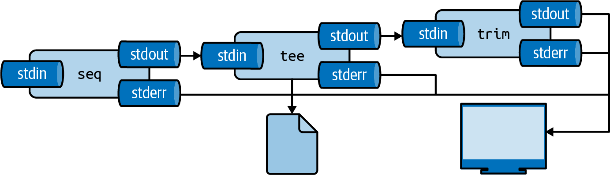

2 Getting Started
In this chapter I’m going to make sure that you have all the prerequisites for doing data science at the command line. The prerequisites fall into three parts: (1) having the same data sets that I use in this book, (2) having a proper environment with all the command-line tools that I use throughout this book, and (3) understanding the essential concepts that come into play when using the command line.
First, I describe how to download the datasets. Second, I explain how to install the Docker image, which is a virtual environment based on Ubuntu Linux that contains all the necessary command-line tools. Subsequently, I go over the essential Unix concepts through examples.
By the end of this chapter, you’ll have everything you need in order to continue with the first step of doing data science, namely obtaining data.
2.1 Getting the Data
The datasets that I use in this book can be downloaded as follows:
- Download the ZIP file from https://www.datascienceatthecommandline.com/2e/data.zip.
- Create a new directory. You can give this directory any name you want, but I recommend you stick to lowercase letters, numbers, and maybe a hyphen or underscore so that it’s easier to work with at the command line. For example: dsatcl2e-data. Remember where this directory is.
- Move the ZIP file to that new directory and unpack it.
- This directory now contains one subdirectory per chapter.
In the next section I explain how to install the environment containing all the command-line tools to work with this data.
2.2 Installing the Docker Image
In this book we use many different command-line tools. Unix often comes with a lot of command-line tools pre-installed and offers many packages that contain more relevant tools. Installing these packages yourself is often not too difficult. However, we’ll also use tools that are not available as packages and require a more manual, and more involved installation. In order to acquire the necessary command-line tools without having to go through the installation process of each, I encourage you, whether you’re on Windows, macOS, or Linux, to install the Docker image that was created specifically for this book.
A Docker image is a bundle of one or more applications together with all their dependencies. A Docker container is an isolated environment that runs an image. You can manage Docker images and containers the docker command-line tool (which is what you’ll do below) or the Docker GUI. In a way, a Docker container is like a virtual machine, only a Docker container uses far fewer resources. At the end of this chapter I suggest some resources to learn more about Docker.
If you still prefer to run the command-line tools natively rather than inside a Docker container, then you can, of course, install the command-line tools individually yourself. Please be aware that this is a very time-consuming process. The Appendix lists all the command-line tools used in the book. The Dockerfile of the Docker image shows how each of them is installed on Ubuntu. The scripts and data sets used in the book can be obtained by cloning this book’s GitHub repository.
To install the Docker image, you first need to download and install Docker itself from the Docker website. Once Docker is installed, you invoke the following command on your terminal or command prompt to download the Docker image (don’t type the dollar sign):
docker pull datasciencetoolbox/dsatcl2eThe Docker image works on Intel/AMD and ARM computers, including Macs with Apple Silicon. It has been updated since the book was published, so some output may look slightly different from the printed book. If you want the exact environment that was used for the printed book, use datasciencetoolbox/dsatcl2e:20210628 instead of datasciencetoolbox/dsatcl2e in the commands in this chapter.
You can run the Docker image as follows:
docker run --rm -it datasciencetoolbox/dsatcl2eYou’re now inside an isolated environment—known as a Docker container—with all the necessary command-line tools installed. If the following command produces an enthusiastic cow, then you know everything is working correctly:
cowsay "Let's moove\!"
______________
< Let's moove! >
--------------
\ ^__^
\ (oo)\_______
(__)\ )\/\
||----w |
|| ||If you want to get data in and out of the container, you can add a volume, which means that a local directory gets mapped to a directory inside the container. I recommend that you first create a new directory, navigate to this new directory, and then run the following when you’re on macOS or Linux:
docker run --rm -it -v "$(pwd)":/data datasciencetoolbox/dsatcl2eOr the following when you’re on Windows and using the Command Prompt (also known as cmd):
C:\> docker run --rm -it -v "%cd%":/data datasciencetoolbox/dsatcl2eOr the following when you’re using Windows PowerShell:
PS C:\> docker run --rm -it -v ${PWD}:/data datasciencetoolbox/dsatcl2eIn the above commands, the option -v instructs docker to map the current directory to the /data directory inside the container, so this is the place to get data in and out of the Docker container.
If you would like to know more about the Docker image you can visit it on Docker Hub.
When you’re done, you can shut down the Docker container by typing exit.
2.3 Essential Unix Concepts
In Chapter 1, I briefly showed you what the command line is. Now that you are running the Docker image, we can really get started. In this section, I discuss several concepts and tools that you will need to know in order to feel comfortable doing data science at the command line. If, up to now, you have been mainly working with graphical user interfaces, then this might be quite a change. But don’t worry, I’ll start at the beginning, and very gradually go to more advanced topics.
This section is not a complete course in Unix. I will only explain the concepts and tools that are relevant for to doing data science. One of the advantages of the Docker image is that a lot is already set up. If you wish to know more, consult the Further Reading Section at the end of this chapter.
2.3.1 The Environment
So you’ve just logged into a brand new environment. Before you do anything, it’s worthwhile to get a high-level understanding of this environment. It’s roughly defined by four layers, which I briefly discuss from the top down.
- Command-line tools
-
First and foremost, there are the command-line tools that you work with. We use them by typing their corresponding commands. There are different types of command-line tools, which I will discuss in the next section. Examples of tools are:
ls1,cat2, andjq3. - Terminal
-
The terminal, which is the second layer, is the application where we type our commands in. If you see the following text mentioned in the book:
seq 3 1 2 3then you would type
seq 3into your terminal and pressEnter. (The command-line toolseq4, as you can see, generates a sequence of numbers.) You do not type the dollar sign. It’s just there to tell you that this a command you can type in the terminal. This dollar sign is known as the prompt. The text belowseq 3is the output of the command. - Shell
-
The third layer is the shell. Once we have typed in our command and pressed
Enter, the terminal sends that command to the shell. The shell is a program that interprets the command. I use the Z shell, but there are many others available such as Bash and Fish. - Operating system
-
The fourth layer is the operating system, which is GNU/Linux in our case. Linux is the name of the kernel, which is the heart of the operating system. The kernel is in direct contact with the CPU, disks, and other hardware. The kernel also executes our command-line tools. GNU, which stands for GNU’s not UNIX, refers to the set of basic tools. The Docker image is based on a particular GNU/Linux distribution called Ubuntu.
2.3.2 Executing a Command-line Tool
Now that you have a basic understanding of the environment, it is high time that you try out some commands. Type the following in your terminal (without the dollar sign) and press Enter:
pwd
/home/dstYou just executed a command that contained a single command-line tool. The tool pwd5 outputs the name of the directory where you currently are. By default, when you login, this is your home directory.
The command-line tool cd, which is a Z shell builtin, allows you to navigate to a different directory:
cd /data/ch02 ➊
pwd ➋
/data/ch02
cd .. ➌
pwd ➍
/data
cd ch02 ➎- Navigate to the directory /data/ch02.
- Print the current directory.
- Navigate to the parent directory.
- Print the current directory again.
- Navigate to the subdirectory ch02.
The part after cd specifies to which directory you want to navigate to. Values that come after the command are called command-line arguments or options. Two dots refer to the parent directory. One dot, by the way, refers to the current directory. While cd . wouldn’t have any effect, you’ll still see one dot being used in other places. Let’s try a different command:
head -n 3 movies.txt
Matrix
Star Wars
Home AloneHere we pass three command-line arguments to head6. The first one is an option. Here I used the short option -n. Sometimes a short option has a long variant, which would be --lines in this case. The second one is a value that belongs to the option. The third one is a filename. This particular command outputs the first three lines of file /data/ch02/movies.txt.
2.3.3 Five Types of Command-line Tools
I use the term command-line tool a lot, but so far, I haven’t yet explained what I actually mean by it. I use it as an umbrella term for anything that can be executed from the command line (see Figure 2.1). Under the hood, each command-line tool is one of the following five types:
- A binary executable
- A shell builtin
- An interpreted script
- A shell function
- An alias

It’s good to know the difference between the types. The command-line tools that come pre-installed with the Docker image mostly comprise of the first two types (binary executable and shell builtin). The other three types (interpreted script, shell function, and alias) allow us to further build up our data science toolbox and become more efficient and more productive data scientists.
- Binary Executable
-
Binary executables are programs in the classical sense. A binary executable is created by compiling source code to machine code. This means that when you open the file in a text editor you cannot read it.
- Shell Builtin
-
Shell builtins are command-line tools provided by the shell, which is the Z shell (or
zsh) in our case. Examples includecdandpwd. Shell builtins may differ between shells. Like binary executables, they cannot be easily inspected or changed. - Interpreted Script
-
An interpreted script is a text file that is executed by a binary executable. Examples include: Python, R, and Bash scripts. One great advantage of an interpreted script is that you can read and change it. The script below is interpreted by Python not because of the file extension .py, but because the first line of the script defines the binary that should execute it.
bat fac.py ───────┬────────────────────────────────────────────────────────────── │ File: fac.py ───────┼────────────────────────────────────────────────────────────── 1 │ #!/usr/bin/env python 2 │ 3 │ def factorial(x): 4 │ result = 1 5 │ for i in range(2, x + 1): 6 │ result *= i 7 │ return result 8 │ 9 │ if __name__ == "__main__": 10 │ import sys 11 │ x = int(sys.argv[1]) 12 │ sys.stdout.write(f"{factorial(x)}\n") ───────┴──────────────────────────────────────────────────────────────This script computes the factorial of the integer that we pass as a parameter. It can be invoked from the command line as follows:
./fac.py 5 120In Chapter 4, I’ll discuss in great detail how to create reusable command-line tools using interpreted scripts.
- Shell Function
-
A shell function is a function that is, in our case, executed by
zsh. They provide similar functionality to a script, but they are usually (but not necessarily) smaller than scripts. They also tend to be more personal. The following command defines a function calledfac, which, just like the interpreted Python script above, computes the factorial of the integer we pass as a parameter. It does by generating a list of numbers usingseq, putting those numbers on one line with*as the delimiter usingpaste7, and passing this equation intobc8, which evaluates it and outputs the result.fac() { (echo 1; seq $1) | paste -s -d\* - | bc; } fac 5 120The file ~/.zshrc, which is a configuration file for Z shell, is a good place to define your shell functions, so that they are always available.
- Alias
-
Aliases are like macros. If you often find yourself executing a certain command with the same parameters (or a part of it), you can define an alias for it to save time. Aliases are also very useful when you continue to misspell a certain command (Chris Wiggins maintains a useful list of aliases). The following command defines such an alias:
alias l='ls --color -lhF --group-directories-first' alias les=lessNow, if you type the following on the command line, the shell will replace each alias it finds with its value:
cd /data l total 36K drwxr-xr-x 2 dst dst 4.0K Nov 9 18:57 ch02/ drwxr-xr-x 2 dst dst 4.0K Nov 9 18:57 ch03/ drwxr-xr-x 2 dst dst 4.0K Nov 9 18:57 ch04/ drwxr-xr-x 2 dst dst 4.0K Nov 9 18:57 ch05/ drwxr-xr-x 2 dst dst 4.0K Nov 9 18:57 ch06/ drwxr-xr-x 2 dst dst 4.0K Nov 9 18:57 ch07/ drwxr-xr-x 2 dst dst 4.0K Nov 9 18:57 ch08/ drwxr-xr-x 2 dst dst 4.0K Nov 9 18:57 ch09/ drwxr-xr-x 2 dst dst 4.0K Nov 9 18:57 ch10/ cd ch02Aliases are simpler than shell functions as they don’t allow parameters. The function
faccould not have been defined using an alias because of the parameter. Still, aliases allow you to save lots of keystrokes. Like shell functions, aliases are often defined in the file .zshrc, which is located in your home directory. To see all aliases currently defined, you runaliaswithout arguments. Try it. What do you see?
In this book I’ll focus mostly on the last three types of command-line tools: interpreted scripts, shell functions, and aliases. This is because these can easily be changed. The purpose of a command-line tool is to make your life on the easier, and to make you a more productive and more efficient data scientist. You can find out the type of a command-line tool with type (which is itself a shell builtin):
type -a pwd
pwd is a shell builtin
pwd is /usr/bin/pwd
pwd is /bin/pwd
type -a cd
cd is a shell builtin
type -a fac
fac is a shell function
type -a l
l is an alias for ls --color -lhF --group-directories-firsttype returns three command-line tools for pwd. In that case, the first reported command-line tool is used when you type pwd. In the next section we’ll look at how to combine command-line tools.
2.3.4 Combining Command-line Tools
Because most command-line tools adhere to the Unix philosophy9, they are designed to do only thing, and do it really well. For example, the command-line tool grep10 can filter lines, wc11 can count lines, and sort12 can sort lines. The power of the command line comes from its ability to combine these small, yet powerful command-line tools.
This power is made possible by managing the communication streams of these tools. Each tool has three standard communication streams: standard input, standard output, and standard error. These are often abbreviated as stdin, stdout, and stderr.
Both the standard output and standard error are, by default, redirected to the terminal, so that both normal output and any error messages are printed on the screen. Figure 2.2 illustrates this for both pwd and rev13. If you run rev, you’ll see that nothing happens. That’s because rev expects input, and by the default, that’s any keys pressed on the keyboard. Try typing a sentence and press Enter. rev immediately responds with your input in reverse. You can stop sending input by pressing Ctrl-D after which rev will stop.

stdin), standard output (stdout), and standard error (stderr)
In practice, you’ll not use the keyboard as a source of input, but the output generated by other tools and the contents of files. For example, with curl we can download the book Alice’s Adventures in Wonderland by Lewis Carrol and pipe that to the next tool. (I’ll discuss curl in more detail in Chapter 3.) This is done using the pipe operator (|).

We can pipe the output of curl to grep to filter lines on a pattern. Imagine that we want to see the chapters listed in the table of contents: We can combine curl and grep as follows:
curl -s "https://www.gutenberg.org/files/11/11-0.txt" | grep " CHAPTER"
CHAPTER I. Down the Rabbit-Hole
CHAPTER II. The Pool of Tears
CHAPTER III. A Caucus-Race and a Long Tale
CHAPTER IV. The Rabbit Sends in a Little Bill
CHAPTER V. Advice from a Caterpillar
CHAPTER VI. Pig and Pepper
CHAPTER VII. A Mad Tea-Party
CHAPTER VIII. The Queen’s Croquet-Ground
CHAPTER IX. The Mock Turtle’s Story
CHAPTER X. The Lobster Quadrille
CHAPTER XI. Who Stole the Tarts?
CHAPTER XII. Alice’s EvidenceAnd if we wanted to know how many chapters the book has, we can use wc, which is very good at counting things:
curl -s "https://www.gutenberg.org/files/11/11-0.txt" |
grep " CHAPTER" |
wc -l ➊
12- The option
-lspecifies thatwcshould only output the number of lines that are pass into it. By default it also returns the number of characters and words.
You can think of piping as an automated copy and paste. Once you get the hang of combining tools using the pipe operator, you’ll find that there are virtually no limits to this.
2.3.5 Redirecting Input and Output
Besides piping the output from one tool to another tool, you can also save it to a file. The file will be saved it in the current directory, unless a full path is given. This is called output redirection, and works as follows:
curl "https://www.gutenberg.org/files/11/11-0.txt" | grep " CHAPTER" > chapter
s.txt
% Total % Received % Xferd Average Speed Time Time Time Current
Dload Upload Total Spent Left Speed
100 170.2k 100 170.2k 0 0 173.7M 0 0
cat chapters.txt
CHAPTER I. Down the Rabbit-Hole
CHAPTER II. The Pool of Tears
CHAPTER III. A Caucus-Race and a Long Tale
CHAPTER IV. The Rabbit Sends in a Little Bill
CHAPTER V. Advice from a Caterpillar
CHAPTER VI. Pig and Pepper
CHAPTER VII. A Mad Tea-Party
CHAPTER VIII. The Queen’s Croquet-Ground
CHAPTER IX. The Mock Turtle’s Story
CHAPTER X. The Lobster Quadrille
CHAPTER XI. Who Stole the Tarts?
CHAPTER XII. Alice’s EvidenceHere, we save the output of grep to a file named chapters.txt in the directory /data/ch02. If this file does not exist yet, it will be created. If this file already exists, its contents are overwritten. Figure 2.4 illustrates how output redirection works conceptually. Note that the standard error is still redirected to the terminal.

You can also append the output to a file with >>, meaning the output is added after the original contents:
echo -n "Hello" > greeting.txt
echo " World" >> greeting.txtThe tool echo outputs the value you specify. The -n option, which stands for newline, specifies that echo should not output a trailing newline.
Saving the output to a file is useful if you need to store intermediate results, for example to continue with your analysis at a later stage. To use the contents of the file greeting.txt again, we can use cat, which reads a file prints it.
cat greeting.txt
Hello World
cat greeting.txt | wc -w ➊
2- The
-woption indicateswcto only count words.
The same result can be achieved by using the smaller-than-sign (<):
< greeting.txt wc -w
2This way, you are directly passing the file to the standard input of wc without running an additional process 14. Figure 2.5 illustrates how these two ways work. Again, the final output is the same.

Like many command-line tools, wc allows one or more filenames to be specified as arguments. For example:
wc -w greeting.txt movies.txt
2 greeting.txt
11 movies.txt
13 totalNote that in this case, wc also outputs the name of the files.
You can suppress the output of any tool by redirecting it to a special file called /dev/null. I often do this to suppress error messages (see Figure 2.6 for an illustration). The following causes cat to produce an error message because it cannot find the file 404.txt:
cat movies.txt 404.txt
Matrix
Star Wars
Home Alone
Indiana Jones
Back to the Future
cat: 404.txt: No such file or directoryYou can redirect standard error to /dev/null as follows:
cat movies.txt 404.txt 2> /dev/null ➊
Matrix
Star Wars
Home Alone
Indiana Jones
Back to the Future- The
2refers to standard error.

stderr to /dev/null
Be careful not to read from and write to the same file. If you do, you’ll end up with an empty file. That’s because the tool of which the output is redirected, immediately opens that file for writing, and thereby emptying it. There are two workarounds for this: (1) write to a different file and rename it afterwards with mv or (2) use sponge15, which soaks up all its input before writing to a file. Figure 2.7 illustrates how this works.

sponge, you cannot read from and write to the same file in one pipeline
For example, imagine you have used dseq16 to generate a file dates.txt and now you’d like to add line numbers using nl17. If you run the following, the file dates.txt will end up empty.
dseq 5 > dates.txt
< dates.txt nl > dates.txt
bat dates.txt
───────┬────────────────────────────────────────────────────────────────────────
│ File: dates.txt <EMPTY>
───────┴────────────────────────────────────────────────────────────────────────Instead, you can use one of the workarounds I just described:
dseq 5 > dates.txt
< dates.txt nl > dates-nl.txt
bat dates-nl.txt
───────┬────────────────────────────────────────────────────────────────────────
│ File: dates-nl.txt
───────┼────────────────────────────────────────────────────────────────────────
1 │ 1 2026-11-10
2 │ 2 2026-11-11
3 │ 3 2026-11-12
4 │ 4 2026-11-13
5 │ 5 2026-11-14
───────┴────────────────────────────────────────────────────────────────────────
dseq 5 > dates.txt
< dates.txt nl | sponge dates.txt
bat dates.txt
───────┬────────────────────────────────────────────────────────────────────────
│ File: dates.txt
───────┼────────────────────────────────────────────────────────────────────────
1 │ 1 2026-11-10
2 │ 2 2026-11-11
3 │ 3 2026-11-12
4 │ 4 2026-11-13
5 │ 5 2026-11-14
───────┴────────────────────────────────────────────────────────────────────────2.3.6 Working With Files and Directories
As data scientists, we work with a lot of data. This data is often stored in files. It is important to know how to work with files (and the directories they live in) on the command line. Every action that you can do using a GUI, you can do with command-line tools (and much more). In this section I introduce the most important ones to list, create, move, copy, rename, and delete files and directories.
Listing the contents of a directory can be done with ls. If you don’t specify a directory, it lists the contents of the current directory. I prefer ls to have a long listing format and the directories grouped before files. Instead of typing the corresponding options each time, I use the alias l.
ls /data/ch10
Untitled1337.ipynb alice.txt count.R count.py
alias l
l='ls --color -lhF --group-directories-first'
l /data/ch10
total 176K
-rw-r--r-- 1 dst dst 1.7K Nov 9 18:57 Untitled1337.ipynb
-rw-r--r-- 1 dst dst 164K Nov 9 18:57 alice.txt
-rw-r--r-- 1 dst dst 460 Nov 9 18:57 count.R
-rwxr-xr-x 1 dst dst 408 Nov 9 18:57 count.py*You have already seen how we can create new files by redirecting the output with either > or >>. If you need to move a file to a different directory you can use mv18:
$ mv hello.txt /data/ch02You can also rename files with mv:
$ cd data
$ mv hello.txt bye.txtYou can also rename or move entire directories. If you no longer need a file, you delete (or remove) it with rm19:
$ rm bye.txtIf you want to remove an entire directory with all its contents, specify the -r option, which stands for recursive:
$ rm -r /data/ch02/oldIf you want to copy a file, use cp20. This is useful for creating backups:
$ cp server.log server.log.bakYou can create directories using mkdir21:
cd /data
mkdir logs
l
total 40K
drwxr-xr-x 2 dst dst 4.0K Nov 9 18:57 ch02/
drwxr-xr-x 2 dst dst 4.0K Nov 9 18:57 ch03/
drwxr-xr-x 2 dst dst 4.0K Nov 9 18:57 ch04/
drwxr-xr-x 2 dst dst 4.0K Nov 9 18:57 ch05/
drwxr-xr-x 2 dst dst 4.0K Nov 9 18:57 ch06/
drwxr-xr-x 2 dst dst 4.0K Nov 9 18:57 ch07/
drwxr-xr-x 2 dst dst 4.0K Nov 9 18:57 ch08/
drwxr-xr-x 2 dst dst 4.0K Nov 9 18:57 ch09/
drwxr-xr-x 2 dst dst 4.0K Nov 9 18:57 ch10/
drwxr-xr-x 2 dst dst 4.0K Nov 9 18:57 logs/Using the command-line tools to manage your files can be scary at first, because you have no graphical overview of the file system to provide immediate feedback. There are a few visual file managers that can help with this, such as GNU Midnight Commander, Ranger, and Vifm. These are not installed in the Docker image, but you can install one yourself by running sudo apt install followed by either mc, ranger, or vifm.
All of the above command-line tools accept the -v option, which stands for verbose, so that they output what’s going on. For example:
mkdir -v backup
mkdir: created directory 'backup'
cp -v * backup
cp: -r not specified; omitting directory 'backup'
cp: -r not specified; omitting directory 'ch02'
cp: -r not specified; omitting directory 'ch03'
cp: -r not specified; omitting directory 'ch04'
cp: -r not specified; omitting directory 'ch05'
cp: -r not specified; omitting directory 'ch06'
cp: -r not specified; omitting directory 'ch07'
cp: -r not specified; omitting directory 'ch08'
cp: -r not specified; omitting directory 'ch09'
cp: -r not specified; omitting directory 'ch10'
cp: -r not specified; omitting directory 'logs'All tools but mkdir also accept the -i option, which stands for interactive, and causes the tools to ask you for confirmation. For example:
rm -i *
zsh: sure you want to delete all 11 files in /data [yn]? n2.3.7 Managing Output
Sometimes a tools or sequence of tools produces too much output to include in the book. Instead of manually altering such output, I prefer to be transparent by piping it through a helper tool. You don’t necessarily have to do this, especially if you’re interested in the complete output.
Here are the tools that I use for making output manageable:
If often use trim to limit the output to a given height and width. By default, output is trimmed to 10 lines and the width of the terminal. Pass a negative number to disable trimming the height and or width. For example:
cat /data/ch07/tips.csv | trim 5 25
bill,tip,sex,smoker,day,…
16.99,1.01,Female,No,Sun…
10.34,1.66,Male,No,Sun,D…
21.01,3.5,Male,No,Sun,Di…
23.68,3.31,Male,No,Sun,D…
… with 240 more linesOther tools that I use to massage the output are: head, tail, fold, paste, and column. The appendix contains examples for each of these.
If the output is a comma-separated values, I often pipe it throughcsvlook to turn it into a nice-looking table. If you run csvlook, you’ll see the complete table. I have redefined csvlook such that the table is shortened by trim, and drawn with box-drawing characters:
csvlook () {
command csvlook "$@" | trim |
sed '2s/- | -/──┼──/g;2s/| -/├──/g;2s/- |/──┤/;s/|/│/g;2s/-/─/g'
}command makes sure that the original csvlook is run, not the function itself. To get the same behavior on your own machine, add this function to your ~/.zshrc. Here’s the result:
csvlook /data/ch07/tips.csv
│ bill │ tip │ sex │ smoker │ day │ time │ size │
├───────┼───────┼────────┼────────┼──────┼────────┼──────┤
│ 16.99 │ 1.01 │ Female │ False │ Sun │ Dinner │ 2 │
│ 10.34 │ 1.66 │ Male │ False │ Sun │ Dinner │ 3 │
│ 21.01 │ 3.50 │ Male │ False │ Sun │ Dinner │ 3 │
│ 23.68 │ 3.31 │ Male │ False │ Sun │ Dinner │ 2 │
│ 24.59 │ 3.61 │ Female │ False │ Sun │ Dinner │ 4 │
│ 25.29 │ 4.71 │ Male │ False │ Sun │ Dinner │ 4 │
│ 8.77 │ 2.00 │ Male │ False │ Sun │ Dinner │ 2 │
│ 26.88 │ 3.12 │ Male │ False │ Sun │ Dinner │ 4 │
… with 236 more linesI use bat to show the contents of a file where line numbers and syntax highlighting matters. For example source code:
bat /data/ch04/stream.py
───────┬────────────────────────────────────────────────────────────────────────
│ File: /data/ch04/stream.py
───────┼────────────────────────────────────────────────────────────────────────
1 │ #!/usr/bin/env python
2 │ from sys import stdin, stdout
3 │ while True:
4 │ line = stdin.readline()
5 │ if not line:
6 │ break
7 │ stdout.write("%d\n" % int(line)**2)
8 │ stdout.flush()
───────┴────────────────────────────────────────────────────────────────────────Sometimes I add the -A option when I want to explicitly point out the spaces, tabs, and newlines in a file.
Sometimes it’s useful to write intermediate output to a file. This allows you to inspect any step in your pipeline once it has completed. You can insert the tool tee as often as you like in your pipeline. I often use it to inspect a portion of the final output, while writing the complete output to file (see Figure 2.8. Here, the complete output is written to even.txt and the first 5 lines are printed using trim:
seq 0 2 100 | tee even.txt | trim 5
0
2
4
6
8
… with 46 more lines
tee, you can write intermediate output to a file
Lastly, to insert images that have been generated by command-line tools (so every image except screenshots and diagrams) I use display. If you run display you’ll find that it doesn’t work. In Chapter 7, I explain four options for you to display generated images from the command line.
2.3.8 Help!
As you’re finding your way around the command-line, it may happen that you need help. Even the most seasoned users need help at some point. It is impossible to remember all the different command-line tools and their possible arguments. Fortunately, the command line offers severals ways to get help.
The most important command to get help is perhaps man22, which is short for manual. It contains information for most command-line tools. In case I forgot the options to the tool tar, which happens all the time, I just access its manual page using:
man tar | trim 20
TAR(1) GNU TAR Manual TAR(1)
NAME
tar - an archiving utility
SYNOPSIS
Traditional usage
tar {A|c|d|r|t|u|x}[GnSkUWOmpsMBiajJzZhPlRvwo] [ARG...]
UNIX-style usage
tar -A [OPTIONS] -f ARCHIVE ARCHIVE...
tar -c [-f ARCHIVE] [OPTIONS] [FILE...]
tar -d [-f ARCHIVE] [OPTIONS] [FILE...]
tar -r [-f ARCHIVE] [OPTIONS] [FILE...]
tar -t [-f ARCHIVE] [OPTIONS] [MEMBER...]
… with 1144 more linesNot every command-line tool has a manual page. Take cd for example:
man cd
No manual entry for cdFor shell builtins like cd you can consult the zshbuiltins manual page:
man zshbuiltins | trim
ZSHBUILTINS(1) General Commands Manual ZSHBUILTINS(1)
NAME
zshbuiltins - zsh built-in commands
SHELL BUILTIN COMMANDS
Some shell builtin commands take options as described in individual en‐
tries; these are often referred to in the list below as `flags' to
avoid confusion with shell options, which may also have an effect on
the behaviour of builtin commands. In this introductory section, `op‐
… with 2807 more linesYou can search by pressing / and exit by pressing q. Try to find the appropriate section for cd.
Newer command-line tools often lack a manual page as well. In that case, your best bet is to invoke the tool with the --help (or -h) option. For example:
jq --help | trim
jq - commandline JSON processor [version 1.8.1]
Usage: jq [options] <jq filter> [file...]
jq [options] --args <jq filter> [strings...]
jq [options] --jsonargs <jq filter> [JSON_TEXTS...]
jq is a tool for processing JSON inputs, applying the given filter to
its JSON text inputs and producing the filter's results as JSON on
standard output.
… with 52 more linesSpecifying the --help option also works for command-line tools such as cat. However, the corresponding man page often provides more information. If, after trying these three approaches, you are still stuck, then it is perfectly acceptable to consult the Internet. In the appendix, there’s a list of all command-line tools used in this book. Besides how each command-line tool can be installed, it also shows how you can get help.
Manual pages can be quite verbose and difficult to read. The tool tldr23 is a collection of community-maintained help pages for command-line tools, that aims to be a simpler, more approachable complement to traditional manual pages. Here’s an example showing the tldr page for tar:
tldr tar | trim 20
Archiving utility.
Often combined with a compression method, such as `gzip` or `bzip2`.
More information: <https://www.gnu.org/software/tar/manual/tar.html>.
[c]reate an archive and write it to a [f]ile:
tar cf path/to/target.tar path/to/file1 path/to/file2 ...
[c]reate a g[z]ipped archive and write it to a [f]ile:
tar czf path/to/target.tar.gz path/to/file1 path/to/file2 ...
[c]reate a g[z]ipped (compressed) archive from a directory using relative pat…
tar czf path/to/target.tar.gz [-C|--directory] path/to/directory .
E[x]tract a (compressed) archive [f]ile into the current directory [v]erbosel…
tar xvf path/to/source.tar.ext
… with 17 more linesAs you can see, rather than listing the many options alphabetically like man often does, tldr cuts to the chase by giving you a list of practical examples.
2.4 Summary
In this chapter you learned how to get all the required command-line tools by installing a Docker image. I also went over some essential command-line concepts and how to get help. Now that you have all the necessary ingredients, you’re ready for the first step of the OSEMN model for data science: obtaining data.
2.5 For Further Exploration
- The subtitle of this book pays homage to the epic Unix Power Tools by Jerry Peek, Shelley Powers, Tim O’Reilly, and Mike Loukides. And rightly so. In 51 chapters and more than a thousand pages, it covers just about everything there is to know about Unix. It weighs over 4 pounds, so you might want to consider getting the ebook.
- The website explainshell parses a command or a sequence of commands and provides a short explanation of each part. Useful for quickly understanding a new command or option without having to skim through the relevant manual pages.
- Docker is truly a brilliant piece of software. In this chapter I’ve briefly explained how to download a Docker image and run a Docker container, but it might be worthwhile to learn how to create your own Docker images. The book Docker: Up & Running by Sean Kane and Karl Matthias is a good resource as well.
uutils contributors, ls – List Directory Contents, version 0.10.0, 2026, https://github.com/uutils/coreutils.↩︎
uutils contributors, cat – Concatenate Files and Print on the Standard Output, version 0.10.0, 2026, https://github.com/uutils/coreutils.↩︎
Stephen Dolan, jq – Command-Line JSON Processor, version 1.8.1, 2025, https://jqlang.org.↩︎
uutils contributors, seq – Print a Sequence of Numbers, version 0.10.0, 2026, https://github.com/uutils/coreutils.↩︎
uutils contributors, pwd – Print Name of Working Directory, version 0.10.0, 2026, https://github.com/uutils/coreutils.↩︎
uutils contributors, head – Output the First Part of Files, version 0.10.0, 2026, https://github.com/uutils/coreutils.↩︎
uutils contributors, paste – Merge Lines of Files, version 0.10.0, 2026, https://github.com/uutils/coreutils.↩︎
Philip A. Nelson, bc – an Arbitrary Precision Calculator Language, version 1.07.1, 2017, https://www.gnu.org/software/bc.↩︎
Eric S Raymond, The Art of Unix Programming (Addison-Wesley Professional, 2003).↩︎
Jim Meyering, grep – Print Lines That Match Patterns, version 3.12, 2025, https://www.gnu.org/software/grep.↩︎
uutils contributors, wc – Print Newline, Word, and Byte Counts for Each File, version 0.10.0, 2026, https://github.com/uutils/coreutils.↩︎
uutils contributors, sort – Sort Lines of Text Files, version 0.10.0, 2026, https://github.com/uutils/coreutils.↩︎
Karel Zak, rev – Reverse Lines Characterwise, version 2.41.3, 2025, https://www.kernel.org/pub/linux/utils/util-linux.↩︎
Some consider this a useless use of
cat, arguing that the purpose ofcatis to concatenate files and if you’re not using it for this purpose, it’s a waste of time, and costs you a process. I think this is silly. We’ve got more important things to do!↩︎Colin Watson and Tollef Fog Heen, sponge – Soak up Standard Input and Write to a File, version 0.69, 2024, https://joeyh.name/code/moreutils.↩︎
Jeroen Janssens, dseq – Generate Sequence of Dates, version 0.1, 2021, https://github.com/jeroenjanssens/dsutils.↩︎
uutils contributors, nl – Number Lines of Files, version 0.10.0, 2026, https://github.com/uutils/coreutils.↩︎
Mike Parker, David MacKenzie, and Jim Meyering, mv – Move (Rename) Files, version 9.7, 2025, https://www.gnu.org/software/coreutils.↩︎
Paul Rubin et al., rm – Remove Files or Directories, version 9.7, 2025, https://www.gnu.org/software/coreutils.↩︎
Torbjorn Granlund, David MacKenzie, and Jim Meyering, cp – Copy Files and Directories, version 9.7, 2025, https://www.gnu.org/software/coreutils.↩︎
uutils contributors, mkdir – Make Directories, version 0.10.0, 2026, https://github.com/uutils/coreutils.↩︎
John W. Eaton and Colin Watson, man – an Interface to the System Reference Manuals, version 2.13.1, 2025, https://nongnu.org/man-db.↩︎
Danilo Bargen and Niklas Mohrin, tldr – Collaborative Cheatsheets for Console Commands, version 1.8.1, 2025, https://github.com/tealdeer-rs/tealdeer.↩︎